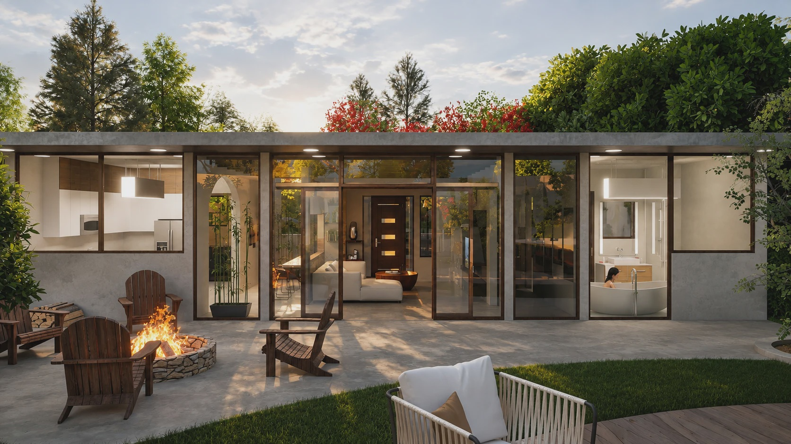
Experimental
Circular Home.
An architectural concept organized around a private circular garden, with living spaces, a fire-pit terrace and a secluded spa deck.
Explore the projectAn inward-facing retreat.
The circular enclosure creates privacy while keeping the courtyard connected to the house. A broad, curved roof shelters the interior rooms and frames the landscape.
Presented through aerial, exterior, interior and evening architectural visualizations.
The Circular Form
A roof plane and perimeter wall establish a sheltered courtyard. The overhead perspectives show how the garden, house and outdoor spaces fit together.
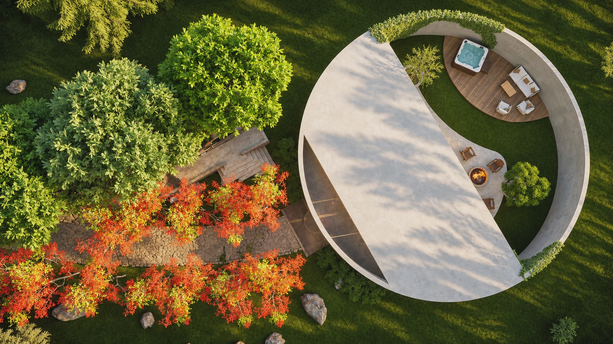

Arrival & Entrance
A landscaped approach connects the parking area and the house entrance through stone paths, steps and planting.


Outdoor Living
A continuous garden connects the fire-pit terrace and a raised timber platform with an outdoor spa and lounge seating.

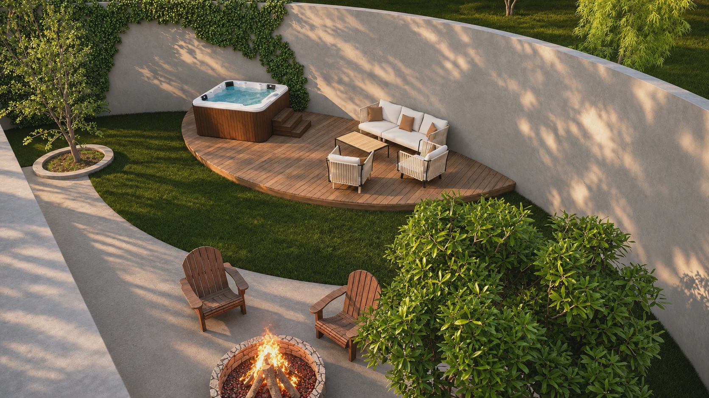
Living Spaces
Open living areas face the courtyard through full-height glazing. Timber beams, textured stone and warm furnishings carry through the shared spaces.
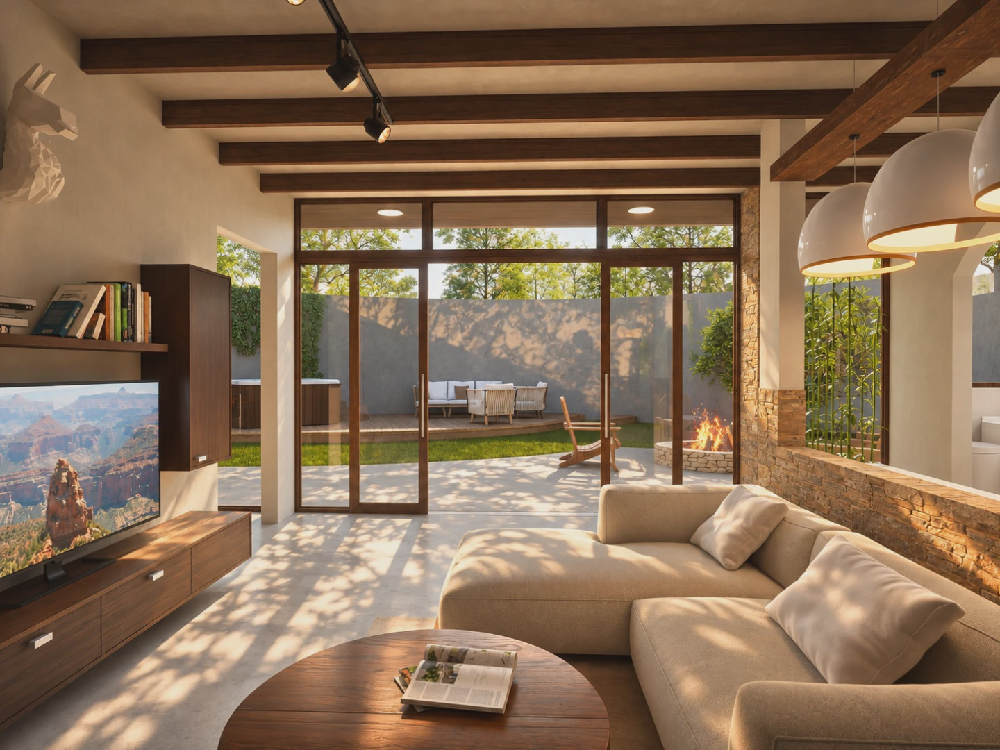
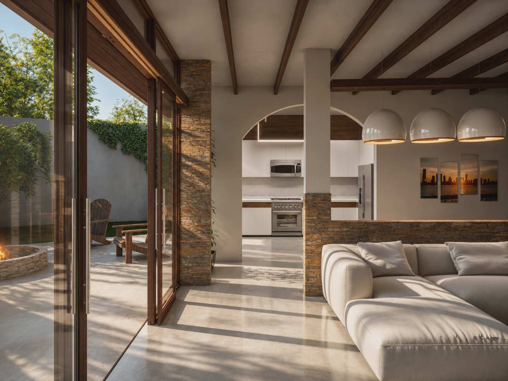

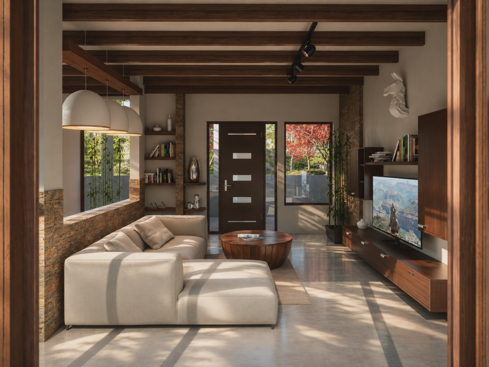
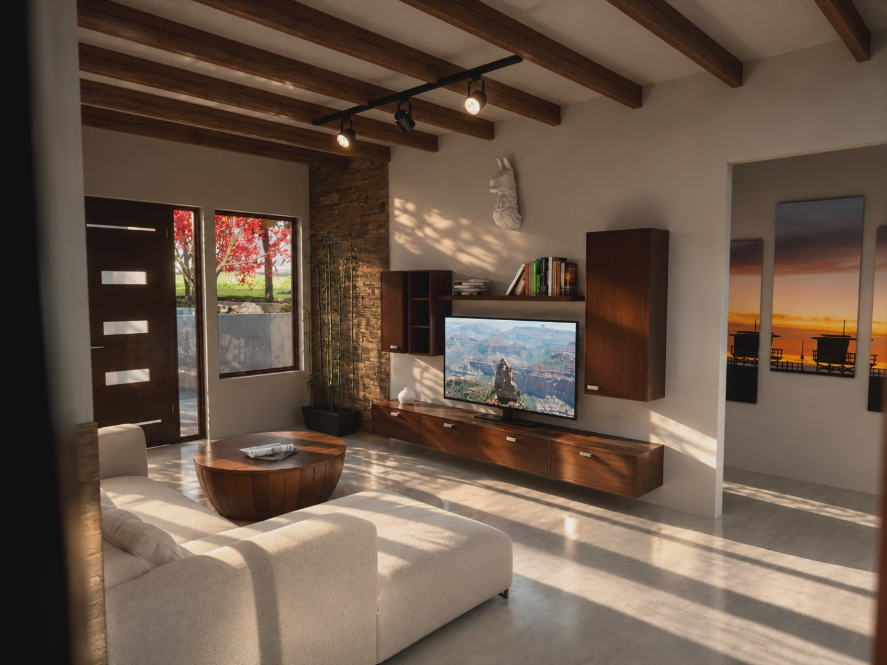

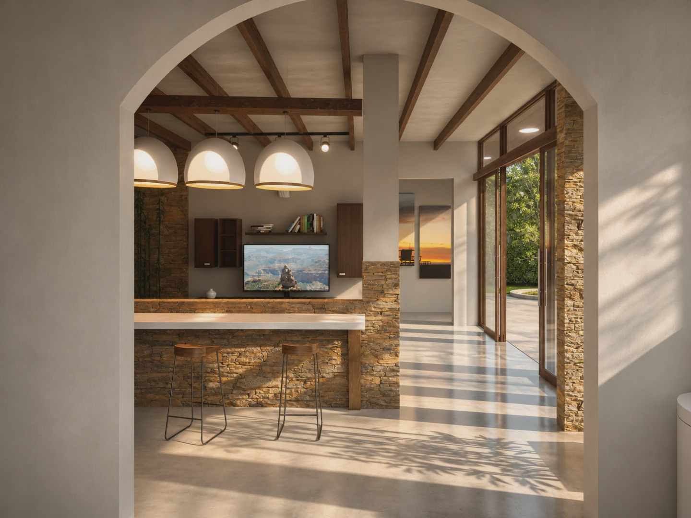
Kitchen & Dining
The kitchen and breakfast counter sit beside the central living area, connected visually through arches and open sightlines.


Bedroom & Bathroom
The private rooms retain daylight and landscape views while using restrained finishes and a warm material palette.

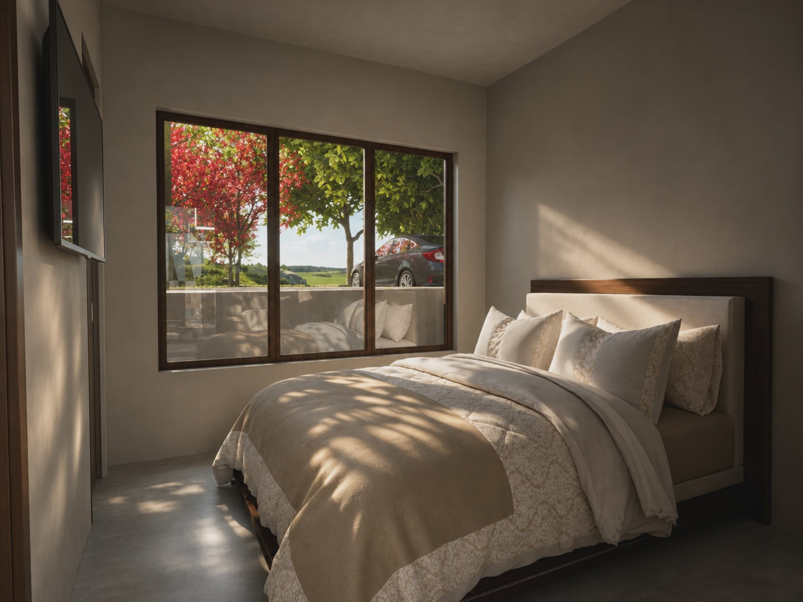


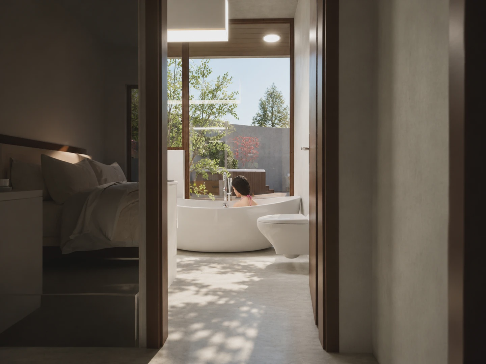
After Dark
At night, interior lighting and the fire pit define the exterior spaces. The courtyard deck stays visually connected to the house.

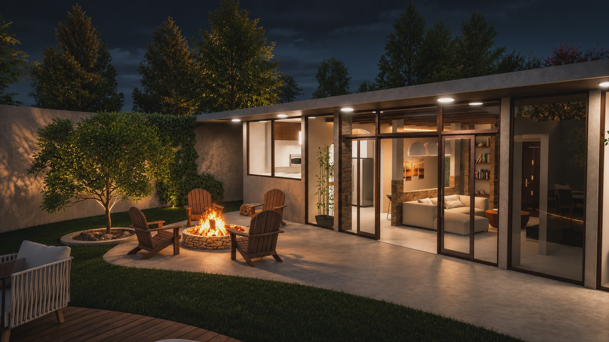